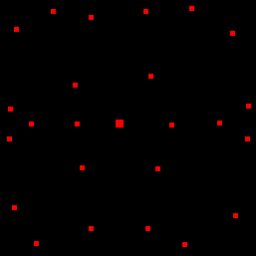
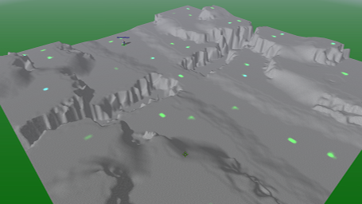

Mapdev:metal
Metal
Metal maps are used for the built in resourcing scheme (Metal/Energy), they define metal areas on a battlefield based upon the values in the red channel of the metal map.
| Caution | |
|---|---|
| There are several games for Spring which use their own resourcing system. If you are creating a map for one of those games a metal map may not be necessary, however it is always nice if you can make your maps as compatible with other games as possible, but this is a choice left entirely up to you. |
 |
 |
| Example Metal Map | Ingame Result |
|---|
{kind=link}
{kind=link}
Specification
mapinfo.lua
mapinfo ={
...
maxMetal = 0.02,
extractorRadius = 500.0,
autoShowMetal = true,
...
smf = {
....
metalmapTex = "",
....
},
...
}
Image File
- The red value of pixel corresponds to the metal value.
| File Location | The metal map is an intermediary file compiled into the SMF file using MapConv or MapConvNG, it can also be specified in the mapinfo.lua. | ||||||||||||||
|---|---|---|---|---|---|---|---|---|---|---|---|---|---|---|---|
| File Format | Any that the Mapconv programs support | ||||||||||||||
| Colour Depth | 8bpp | ||||||||||||||
| Channels | Greyscale | ||||||||||||||
| Resolution |
| ||||||||||||||
Additional Information
Patch Technique
If you do want perfect metal patches, use a 6x6 pixel pencil in your image editor with a red value of 255. This combined with setting the "MaxMetal" tag in the definitions to 1, will result in a perfect 2.0 metal generation per patch (using Balanaced Annihilation values). The game use isn't the point however. The fact is that if you can predict how much each spot will output (typically), using the "MaxMetal" parameter, you can easily scale the values up and down. As an example of another extreme, Evolution RTS dictates that all metal patches will output 0.5 metal regardless of the map settings. So whether you need to put a lot of thought into your metal map values depends entirely upon the game for which you are creating the map.